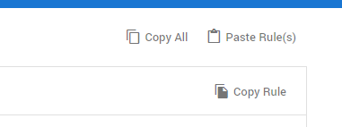

Classify documents with field values and/or tags. This classification is automatically executed when a document matches an Auto Classification Rule.
The video below is a helpful example:
Important:Existing data 'wins'. This means that a new Auto Classification Rule does not have precedence over conflicting tags. The new rule will not overwrite any existing, conflicting tags.
Add New Auto Classification Rule
On the Home page, select Configuration:
Select Auto Classification:
Select
Define a name.
Select a Rule Type.
Intake Only The field values/tags specified in this rule are set only once when a document comes into the system and matches the specified query.
This type of rule is useful when you want to pre-set certain field values/tags based on the document content, but the reviewers will be able to change it later. For example, you might want to mark some documents as irrelevant/spam based on a certain filter.
Continuous The field values specified in this rule are set when a document matches the specified query. The query is evaluated both when the document initially comes into the system and when the document changes.
This type of rule is useful when you want to set certain fields to certain values based on criteria that change as the document goes through the review process. As an example, mark a document as reviewed when a certain combination of tags is applied.
Define the query.
Note: You cannot define a full-text query when you selected Continuous as the Rule Type. You can always search for Fields and/or Tags. We have a few Example Queries. For more information, please refer to the ZyLAB One Search Language Guide.
Define When Matches.
Found documents will be labeled with the field value(s) and Tag(s) defined here.
Note: You cannot define Tag(s) when you selected Continuous as the Rule Type.
Click Apply.
The new rule is added to the pane on the left.
Once you have created one or more rules, you can filter them. You can also edit or remove them.
Reuse Auto Classification Rules

Reusing one or more Auto Classification Rules reduces the time needed to create new ones. This is especially true for Auto Classification Rules with complex queries.
To copy all rules in your matter, select the Copy All icon in the top right corner. Next, go to Auto Classification in the matter where you want to reuse these rules and select Paste Rule(s).
Filter your rules to make a selection when copying.
To copy one rule, select a rule and select the Copy Rule icon in the top right corner. Next, go to Auto Classification in the matter where you want to reuse this rule and select Paste Rule(s).
Note I: When Paste Rule(s) does not work, please try Ctrl+V. Note II: Duplicate rules will be skipped. This will prevent pasting the same rule in your matter twice.